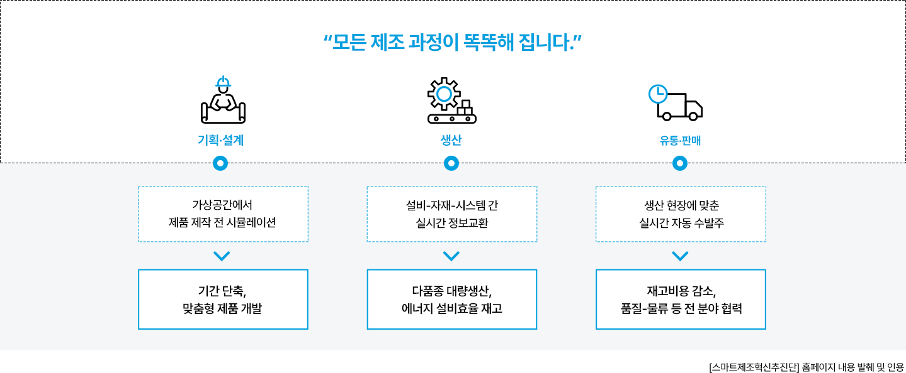
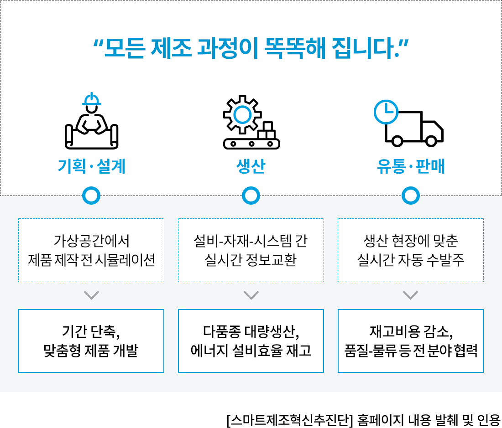
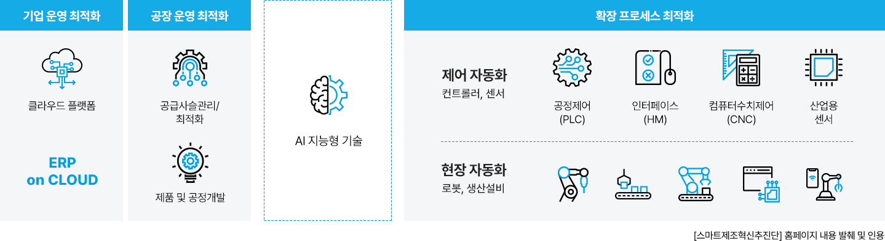
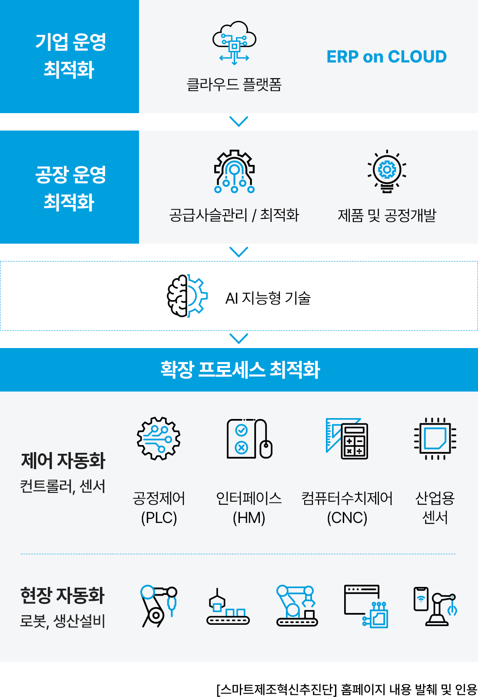
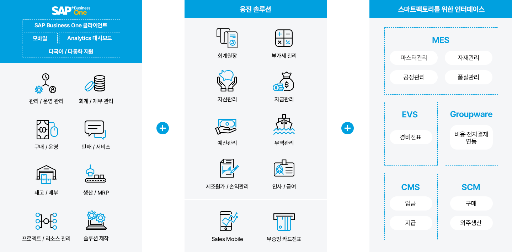
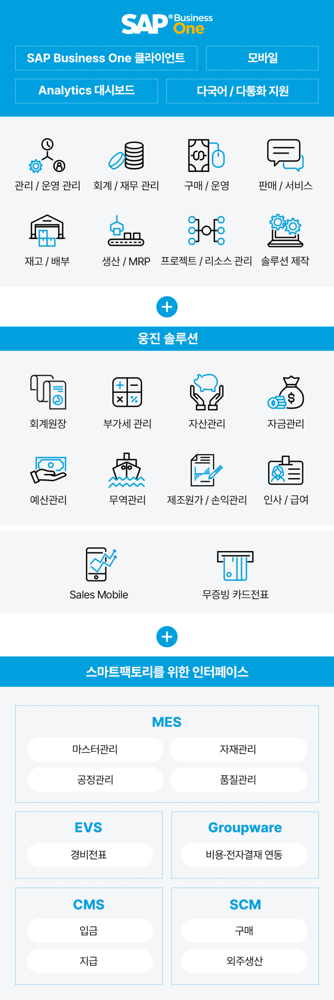
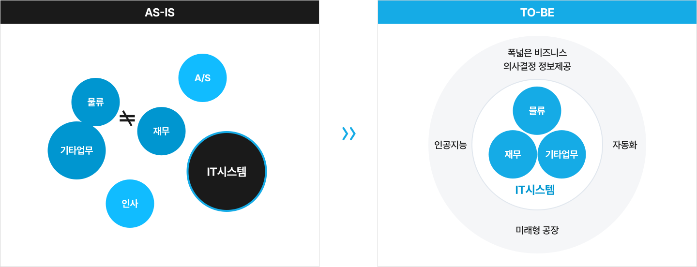
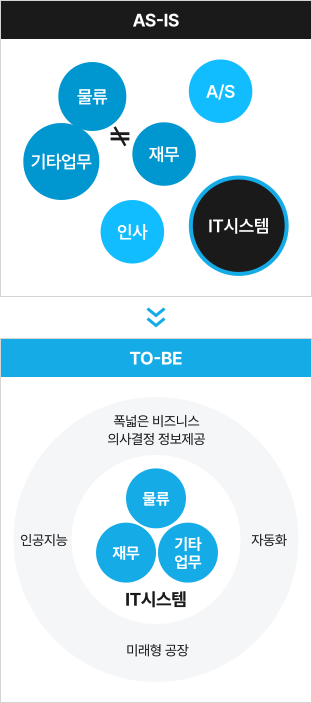

Smart Factory란?
제조 현장을 지능화하는 디지털 공장 솔루션입니다. IoT·AI·ERP를 통합 적용해 생산성과 품질 향상을 지원합니다. 기업은 단계적 고도화를 통해 안정적인 스마트 제조 체계를 구축할 수 있습니다.
‘스마트공장’ 전개
스마트팩토리는 제품의 기획부터 판매까지 모든 생산과정을 ICT(정보통신)기술로 통합해서 최소비용과 시간으로 고객 맞춤형 제품을
생산하는 사람중심의 첨단 지능형 공장을 의미합니다.
웅진은 정부지원사업과 연계하여 기업고객이 완벽한 스마트공장을 구현 할 수 있는 방향을 제시합니다.


스마트공장의 기본은 ERP.
스마트공장은 제품의 생산라인 변경, 공정 변경 등 사람의 편의를 위한 시설의 재정비만을 의미하지 않습니다.
공장 전체의 프로세스 흐름을 파악하고 이를 수치화 시켜 의미 있는 데이터로 재가공해 현장의 자동화와 제어 자동화까지 확장 프로세스를 최적화하는 것이 스마트공장의 목표입니다. 이때 필요한 것은 ERP가 전체 공정의 기준이 되어야 한다는 것입니다.
ERP의 구현이 스마트공장의 첫걸음입니다.


제조혁신을 위한 스마트공장의 연결
스마트공장은 ERP를 기본으로 제조현장에서 발생하는 데이터의 흐름을 정확하게 파악 할 수 있어야 합니다.
여기에 스마트공장에 필요한 다양한 솔루션을 연결하면, 기업이 원하는 스마트공장의 모습이 구현 되며 제조혁신을 위한 첫걸음이 시작됩니다. 웅진은 완벽한 스마트공장을 위해 미래를 연결합니다.


기업규모에 맞는 단계적 구축 가능
스마트공장의 지원 단계는 기업의 사정에 따라 적절한 수준과 기능을 선택할 수 있고 이에 따른 점진적인 구현을 가능하게 합니다.
중소기업들이 비교적 적은 비용으로 쉽게 시작할 수 있는 기초 단계를 구축하고 있으며, 기대 이상의 성과에 만족해하고 있습니다.
스마트공장 기초 단계라 할지라도 실시간으로 생산되는 제품을 바로 집계해 관리할 수 있고 자재 이력 관리(lot-tracking)까지 가능합니다.
* 표를 좌우로 스크롤하여 확인하세요.
| 구분 | 현장자동화 | 공장운영 | 기업자원관리 | 제품개발 | 공급사슬관리 | |
|---|---|---|---|---|---|---|
| 고도화 2단계 | 고도 | IoT/IoS 기반의 CPS화 | 인터넷 공간 상의 비즈니스 CPS 네트워크 협업 |
|||
| IoT/IoS화 | IoT/IoS(모듈)화, 빅데이터 기반의 진단 및 운영 | |||||
| 중간2 | 설비제어 자동화 | 실시간 공장제어 | 공장운영 통합 | 시뮬레이션과 일괄 프로세스 자동화 |
다품종 개발 현업 | |
| 고도화 1단계 | 중간1 | 설비데이터 자동집계 | 실시간 의사결정 | 기능 간 통합 | 기술 정보 생성 자동화와 협업 |
다품종 생산 협업 |
| 기초단계 | 기초 | 실적집계 자동화 | 공정물류 관리 (POP) | 관리 기능 중심 기능 개별 운용 |
서버를 통한 기술/납기 관리 | 단일 모기업 의존 |
스마트공장에서 지능형공장으로
(1) 기준 시스템의 도입 필요
스마트공장을 위한 ERP의 도입으로 인해 기업의 경영정보시스템 환경은 기존과 많이 달라지게 됩니다. 영리한 ERP 시스템은 최상위
의사결정에 기여할 수 있어야 합니다. 흩어진 업무를 통합하고 규칙과 기준에 따른 데이터의 정립이 반드시 필요합니다. 이를 통해 미래의
초지능형 공장에 가까워질 수 있습니다.


(2) 스마트공장 업무 변화
물류와 재무의 통합데이터는 관리측면의 효율적 업무 향상을 기대할 수 있고 이는 생산 경쟁력의 강화와 업무의 상위 평준화를 달성 할 수 있습니다. 또한 최상위 의사결정에 기여 합니다. 이를 통해 신사업 확장을 위한 혁신 발판까지 마련할 수 있습니다.
AS-IS (제한적 현재)
- 재무 및 물류의 별도 시스템관리로 인한 업무효율 및 신뢰성 저하
- 전사적 업무프로세스 정립과 사업장 확장에 대비한 시스템 구조 확보 필요
- 생산 공정 관리 및 품질관리 활동 계획수립을 통한 불량률 감소 필요
- 시스템을 통한 정보 공유 및 실시간 의사 결정 정보 제공, 다차원적 손익분석 개선 필요
TO-BE (Key Benefits, 확장형 미래)(확장형 미래)
- 마스터데이터의 체계확립 및 신규/수정 프로세스 정립
- 구매/외주입고 및 수불근거에 의한 수불처리체계 확립
- 실제 원가에 대한 원가별 비용분석으로 꾸준한 원가 절감 가능
- ICT연계를 통한 실시간 흐름 확인, 모니터링 체계 확립을 통해 스마트 생산관리 가능
- 전략적 의사결정을 지원할 수 있는 정보시스템의 경영 정보 및 업무별 다양한 보고서 제공 가능
 BMW코리아BMW Korea on DMS
BMW코리아BMW Korea on DMS
BMW코리아는 비즈니스 확대에 따른 효율적 운영을 위해 서비스의 신뢰성과 확장성이 중요해졌습니다. 클라우드의 장점인 글로벌 비즈니스의 확대, 빠른 대응 및 안정적인 운영을 위해 웅진과 함께 AWS 클라우드 기반의 DMS를 도입했습니다.
[의의]
- EKS 클러스터에 자동화되고 신뢰할 수 있는 인프라를 구현하여 보다 확장성 있는 서비스 제공
- 판매 시스템 업그레이드 및 안정성 보장